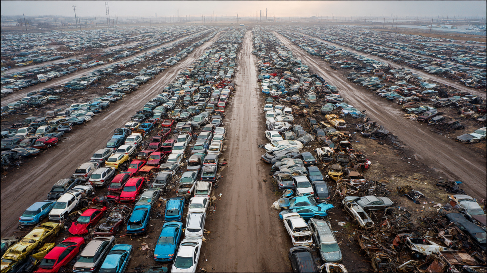

The Junkyard Dividend: America’s ‘Safest Year’ on the Road Is Really About Scrapping Death Traps

NHTSA dropped its 2025 preliminary fatality estimate last month: 36,640 dead, down 6.7% from 2024. NHTSA called it the fifth-largest annual percentage decrease in FARS history. Advocates exhaled. Headlines said roads were safer. Everyone moved on.
Nobody asked the obvious question.
Those vehicles are 18 to 26 years old now, well past the average American car’s 12.5-year lifespan. They are leaving the fleet not because anyone decided they were dangerous, but because transmissions seize, frames rot, and insurance adjusters total them after fender benders that would cost more to fix than the car is worth. And when they go, they take their body count with them.
The Death Peak Nobody Talks About
FARS tracks every fatal crash in the United States, and our data (2014–2023, 337 models, 187,000+ deaths) contains a revealing dimension: the model year of the vehicle involved. Plot total deaths by model year and a brutal mountain range emerges.
Model year 2005 sits at the summit with 11,363 deaths across the decade of FARS data. Model year 2004 is right behind it at 11,221. Combined, model years 2000–2008 account for 84,171 deaths, nearly 45% of every fatality in the dataset, concentrated in nine model years that represent maybe a quarter of the total fleet during the observation period.[1]
Why these vintages? Three compounding factors converge: first, they were produced in enormous volumes during the pre-recession sales boom, so there were simply more of them on the road. Second, almost none had electronic stability control, which IIHS estimates reduces fatal single-vehicle crash risk by 56% for SUVs and 49% for cars.[2] Third, they occupied the lethal sweet spot during 2014–2023: old enough to be cheap (driven harder, maintained less, bought by younger and lower-income drivers), but not yet old enough to have been scrapped en masse.
That last part is changing fast.
The Scrapyard Is Doing NHTSA’s Job
A 2005 Chevy Cavalier rolling off a flatbed at Pick-n-Pull doesn’t generate a press release. But in FARS data, the Cavalier has per-crash occupant lethality of 85.7%, meaning in nearly every fatal crash involving a Cavalier, the Cavalier’s occupant is the one who dies. Compare that to the vehicles replacing it on dealer lots: a 2024 Chevy Equinox has a per-crash lethality of just 35.6%, plus standard ESC, forward collision alert, and automatic emergency braking. That Cavalier-to-Equinox replacement isn’t an upgrade. It’s the difference between a coffin and a car.[1]
And it’s happening across the entire fleet, silently, one junkyard transaction at a time.
Post-2009 model years tell the story in reverse. Model year 2009 produced just 5,729 deaths in our data, barely half the 2005 peak. Recession-era production cuts meant fewer pre-ESC vehicles entered the fleet. Every model year from 2010 onward shows progressively fewer deaths (6,200 for MY2010 down to 867 for MY2022), partly because newer vehicles have had less time on the road to accumulate fatal crashes, and partly because they are genuinely harder to kill people in.[1]
The Class Rotation Compounds the Effect
It isn’t only age. The compositional shift from sedans to SUVs amplifies the vintage attrition effect.
In FARS data, sedan occupants die in 64.5% of their vehicles’ fatal crashes. SUV occupants die in 52.4%. That 12.1-percentage-point gap means SUV occupants survive fatal crashes at meaningfully higher rates, largely because they sit higher, weigh more, and absorb more crash energy before the passenger compartment deforms.[1]
Sedans accounted for 52.1% of all post-2010 model year deaths in FARS. But sedans represented a shrinking share of new car sales throughout the 2010s, bottoming at roughly 20% by 2023 (down from over 50% in 2012). Crossover SUVs are replacing them, with structurally lower per-crash lethality. Every year, the fleet composition tilts further toward the class that kills its own occupants less often.[3]
This creates an asymmetry that nobody in Washington is quantifying: the decline in fatalities is partly a mechanical consequence of which vehicles are leaving the fleet (dangerous sedans and pre-ESC trucks) and which vehicles are entering it (modern crossovers with advanced safety tech). Subtract the compositional effect, and the behavioral improvement is almost certainly smaller than the 6.7% headline suggests.
What It Means for Your Driveway
If you are driving a 2000–2008 model year vehicle, the FARS data is unambiguous: you are in the deadliest vintage cohort on American roads. Those nine model years produced 84,171 deaths in a decade of data. The next nine model years (2009–2017) produced roughly 51,000, a 39% reduction per vintage-year, and that gap would widen further if you controlled for fleet size and miles driven.[1]
Buying a 2015 or newer vehicle with standard ESC and ideally forward collision warning doesn’t just reduce your personal risk. It contributes to the single most effective safety intervention America has right now: fleet turnover. Check your VIN for outstanding recalls at nhtsa.gov/recalls. If the car has three open recalls and a transmission that shudders at 40, it may be time to do America’s roads a favor and let it go.
Limitations
Our FARS extract covers 2014–2023 fatal crashes and cannot directly prove that fleet attrition caused the 2025 decline, which is based on preliminary NHTSA estimates for a year outside our dataset. FARS captures only fatal crashes: 36,000+ annual deaths are a fraction of the roughly 6.7 million total crashes per year. A vehicle with low fatality rates might still have high injury rates. The deaths-by-model-year distribution reflects both fleet size and per-mile risk, and we cannot disaggregate those two factors with the available data. Trucks last longer than sedans on average, so uniform scrappage assumptions overstate sedan attrition and understate truck persistence.
The Counterargument, at Full Strength
Post-pandemic driving normalization could explain the entire decline. During 2020–2022, traffic volumes cratered but fatality rates spiked: fewer cars on the road meant faster speeds, more reckless behavior, and a higher proportion of impaired driving. As driving patterns normalized (VMT up 29.8 billion miles in 2025, per NHTSA), the rate correction could account for the fatality decrease independent of fleet composition.[4] Additionally, NHTSA’s “Pathways to Safer Streets” enforcement programs may be working. We cannot rule this out, and the honest answer is that the 2025 decline is probably a mixture of fleet attrition, behavioral normalization, and enforcement, in proportions nobody has yet measured.
Sources & References
- NHTSA, Fatality Analysis Reporting System (FARS), 2014–2023. nhtsa.gov
- IIHS, “Life-saving benefits of ESC continue to accrue,” 2011. iihs.org
- IIHS, Fatality Statistics: Passenger Vehicle Occupants. iihs.org
- NHTSA, “Early Estimate of Motor Vehicle Traffic Fatalities in 2025,” April 2026. nhtsa.gov
- NHTSA ESC final rule, 72 FR 17236, June 2007. govinfo.gov
Source: NHTSA FARS 2014–2023. Model-year death counts are from FARS fatal crashes involving tracked vehicles (337 models with 50+ deaths). 2025 fatality estimates are preliminary NHTSA projections. See methodology for caveats.